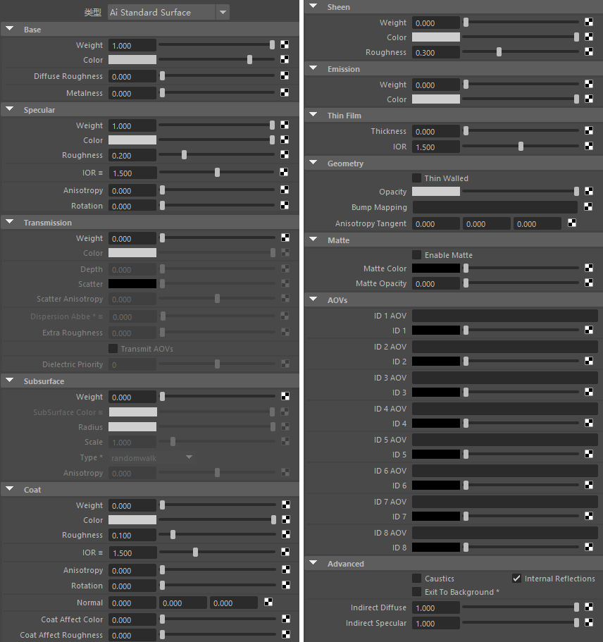
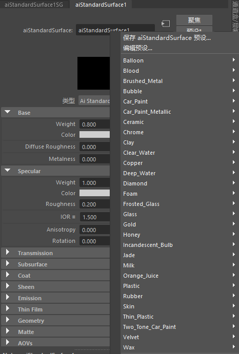
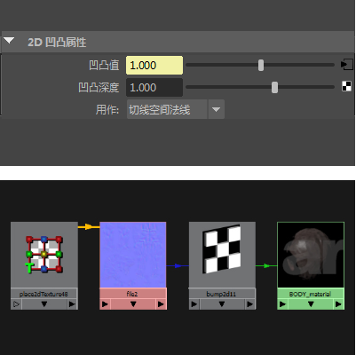
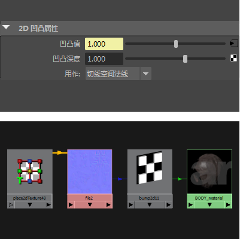

标准曲面
| 延伸阅读 |
|---|
| 有关完整的着色器文档，请参见《Arnold 用户手册》中的标准曲面。 |

standard_surface 着色器是一种基于物理的着色器，能够生成许多类型的材质。
注意：
有关 MtoA 材质库，请单击此处。
- 有关 Arnold 中基于物理渲染的详细信息，请单击此处。
- 在 MtoA 的 Arnold 工具菜单中提供了一个用于将旧版标准*着色器转化为 *standard_surface 着色器的转化脚本（“Arnold > 工具 > 转化着色器”(Arnold > Utilities > Convert Shaders)）。这一简单的脚本还可转化不受支持的材质（Phong、Blinn、mia_material 等）。
- 要观看演示如何使用 transmission_scatter 的视频，请单击此处和此处。
- 要观看演示如何在 Arnold 中渲染气泡嵌套电介质的视频教程，请单击此处。
要下载演示 transmit_AOV 的示例场景文件，请单击此处。
标准曲面预设

standard_surface 预设在属性编辑器中可用
凹凸贴图
凹凸贴图属性接受扰动法线以进行凹凸贴图的着色器。
注意：
有关如何将法线和凹凸贴图组合起来的教程，请单击此处。
法线贴图
法线贴图在工作时会将插值曲面法线替换为从 RGB 纹理求出的法线，在该 RGB 纹理中，每个通道（红色、绿色、蓝色）表示凹凸的一个轴和强度。它的速度比凹凸贴图更快，原因是凹凸贴图需要对下面的着色器进行三次或三次以上的求值。
在 Maya (2017) 中使用颜色管理时，应将法线贴图设置为“未经处理”(RAW)。
在下面的示例中，法线贴图连接到 Maya bump2d 节点，而该节点又连接到某个标准曲面着色器的凹凸贴图属性。
请注意，调整“凹凸深度”(Bump Depth)属性不会影响法线贴图。
 

法线贴图 -> Maya bump_2d_。2D 凹凸设置为 _tangent_space_normals
Arnold 属性
FlipR
FlipR 按钮将翻转法线贴图的红色通道。
FlipR
FlipG 按钮将翻转法线贴图的绿色通道。
FlipG
交换切线(Swap Tangents)
“交换切线”(Swap Tangents)将切换所选法线贴图的红色和绿色通道。
交换切线(Swap Tangents)
使用导数(Use Derivatives)
允许使用导数法线贴图。使用切线空间法线贴图时，如果禁用“使用导数”(Use Derivatives)，则凹凸着色器会使用网格上存储的切线和双切线数据。否则（默认情况下），凹凸着色器将使用来自 Arnold 着色全局参数的 UV 曲面导数。